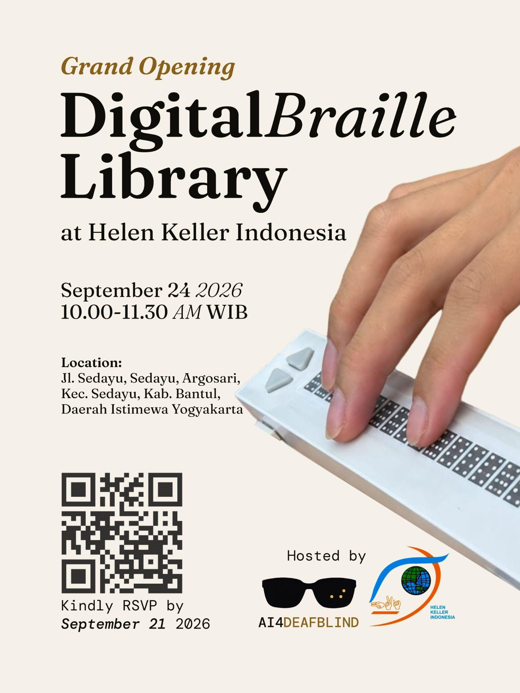

It’s been an eventful few weeks for AI4DeafBlind, and we wanted to share the latest with our Board of Advisors and the wider team — including a warm welcome to Dr. Richard Ladner, who has agreed to join our Board of Advisors and will play a critical role in shaping our product roadmap going forward. Even after a demo hiccup during his visit, Dr. Ladner’s enthusiasm for this work never wavered — and we’re deeply grateful for that vote of confidence.
Here’s where things stand:
1. The Demo Is Ready for a Second Try
The issues we ran into during our last live demo have been identified and fixed. We’re looking forward to showing Dr. Ladner — and demonstrating the real progress since then. We’re aiming to schedule this for mid-October, after returning from an upcoming trip.
2. A Second Successful Field Test in Indonesia
We completed our second Field Test at Helen Keller Indonesia (HKI). The response was genuinely encouraging: a DeafBlind youth, Deaf students, their teachers, the school principal, and the administrator all gave positive feedback on their experience with Braillify.
You can watch the Reel on our homepage.
3. Grand Opening: The First Digital Braille Library
We’ve been busy preparing for a major milestone — the Grand Opening of the first Digital Braille Library at Helen Keller Indonesia. It’s the culmination of a lot of hard work, and we can’t wait to share it with everyone who’s supported this journey.

4. Official 501(c)(3) Status
Big organizational news: our fiscal sponsor, FSA, has approved our application. AI4DeafBlind is now officially a 501(c)(3) project — meaning we can apply for grants and receive tax-deductible donations. This is a major step toward long-term sustainability.
5. A Donor-Friendly Website Refresh
Our website is being rebranded with donors in mind, making it easier for supporters to learn about our work and get involved. It should be live soon — stay tuned.
6. Partnering on Next-Generation Braille Displays
We’re excited to be joining forces with UW Bothell through their Capstone Programs to help design the next generation of Braille Display. The contract with UW Bothell is signed.
We also received an inquiry from Washington State University, and a meeting with WSU’s Capstone Project lead is on the calendar for after the Indonesia trip.
7. Presenting at the World Conference on Deafblindness
On the international stage, we’ve received a Notice of Acceptance for our poster abstract from the Program Committee of the 2027 World Conference on Deafblindness. We’ll be presenting in Davos, Switzerland in July 2027 — a great opportunity to share AI4DeafBlind’s work with the global Deafblind community.
Thank you to everyone — our Board, our field partners, and our growing team — for making this progress possible. More updates to come as the demo, the Grand Opening, and our new website all come together in the weeks ahead.
About the Author

Disclosure: This article was developed with the assistance of AI tools for structural and editorial refinement. The technical concepts and final review were provided by the author.